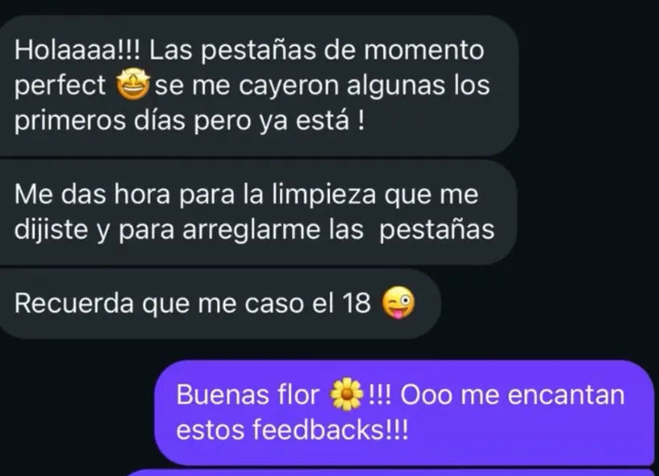

Click Lash · Lifting · Extensiones · Granollers
Tratamientos de pestañas en Granollers
Elige entre Click Lash, extensiones pelo a pelo, lifting coreano con tinte vegano y Korean Gaze™. Valoramos tus pestañas antes de confirmar la opción y el diseño.

Elige tu tratamiento de pestañas: precio y tiempo de cita
| Servicio y objetivo | Tarifa | Tiempo de cita |
|---|---|---|
| Lifting coreano + tinte Curvatura y color sin añadir fibras. | 55 € Tinte incluido. | Aprox. 1 hora. |
| Tinte de pestañas solo Color sin cambiar la curvatura. | 10 € | Consultar. |
| Extensiones pelo a pelo Longitud, curvatura y densidad con fibras añadidas. | 55 € Mantenimiento y retirada se valoran por separado. | Confirmamos según el diseño. |
| Click Lash Colocación profesional; no es un kit doméstico. | 35 € | Aprox. 30 minutos. |
| Korean Gaze™ Natural Brow y lifting coreano con tinte. | 85 € 110 € por separado. | Aprox. 90 minutos. |
El tiempo de cita no es la duración del resultado. En Click Lash, la conservación orientativa es de unas dos semanas, según cuidados. Antes de reservar confirmamos la técnica, el importe, el mantenimiento y la disponibilidad; no todos los servicios son adecuados para todas las pestañas.

Seguimiento real
“Las pestañas, de momento, perfectas. Me encantan estos resultados.”Clienta de Nohuska · tratamiento de pestañas
Del efecto que te gusta a la cita adecuada
Tendencias de pestañas: cómo pedir el acabado que buscas
Una fotografía de referencia ayuda más si explicas qué te gusta de ella: la curvatura, las puntas más oscuras, la longitud o la densidad. No todos esos cambios se consiguen con el mismo tratamiento ni todas las pestañas admiten el mismo diseño.
- Acabado natural o efecto máscara: si quieres destacar tu propia pestaña, compara el lifting coreano con tinte. Si ya te gusta la curvatura y solo buscas color, consulta el tinte por separado.
- Más longitud o densidad: requiere valorar fibras añadidas. Compara extensiones pelo a pelo y Click Lash de colocación profesional, junto con sus cuidados y mantenimiento.
- Cejas y pestañas como conjunto: Korean Gaze™ combina Natural Brow, lifting coreano y tinte, sin convertirlo en un servicio de extensiones.
Antes de consultar, indica la fecha que te interesa, si ya llevas extensiones o un tratamiento reciente y cuánto mantenimiento deseas asumir. La referencia sirve para orientar el diseño, no para prometer una copia idéntica del resultado de otra persona.
Tinte de pestañas en Granollers por 10 €
Si te gusta la forma de tus pestañas pero las puntas claras apenas se ven, puedes consultar el tinte de pestañas solo por 10 €. Aporta color a tu pestaña natural: no la curva, no añade fibras y no crea longitud ni volumen nuevos.
Si también buscas elevarla, el lifting coreano con tinte incluido cuesta 55 €; no se suman los 10 € del servicio independiente. Indica si llevas extensiones o un tratamiento reciente para confirmar qué opción es adecuada antes de reservar.
Compara también el cuidado que necesitarás.
El lifting evoluciona con la renovación de tu pestaña natural y no necesita rellenos de fibras. Las extensiones pelo a pelo requieren limpieza y una revisión del conjunto para decidir cuándo mantenerlo o retirarlo; el momento depende de cómo se conserven y del crecimiento de tus pestañas.
En Click Lash, confirma antes de reservar cuánto tiempo está previsto llevar la colocación y cómo retirarla. No des por hecho que sus cuidados son los mismos que los del pelo a pelo. En la guía de preparación y mantenimiento te explicamos qué información necesitamos para orientarte.
Consultar opciones de pestañasPestañas cerca de ti en Granollers.
El servicio se realiza con cita previa en Avinguda Sant Esteve, 40, 08402 Granollers. Consulta disponibilidad antes de desplazarte.
También atendemos a clientas de otras localidades del Vallès Oriental.
¿Lifting o Korean Gaze?
Elige lifting si quieres trabajar solo las pestañas. Si también deseas diseñar, laminar y teñir las cejas, consulta Korean Gaze™.
Consultar mi casoPreguntas frecuentes sobre pestañas
¿Dónde hacerme un tratamiento de pestañas en Granollers?
En Nohuska Beauty Lab, Avinguda Sant Esteve, 40, 08402 Granollers, con cita previa.
¿Qué es Click Lash?
Es una opción de colocación profesional de aproximadamente 30 minutos. El resultado tiene una duración orientativa de unas dos semanas, según conservación y cuidados. La tarifa es de 35 €.
¿Realizáis extensiones pelo a pelo?
Sí. Las diseñamos fibra a fibra según tus pestañas naturales, la forma de tus ojos y el resultado buscado. La tarifa es de 55 €; mantenimiento y retirada se valoran por separado.
¿El lifting coreano incluye tinte?
Sí. El servicio de 55 € y aproximadamente una hora incluye lifting coreano y tinte vegano, siempre que la pestaña permita realizar el protocolo. El tinte de pestañas solo cuesta 10 € y no incluye lifting.
¿Qué incluye Korean Gaze™?
Natural Brow™, lifting coreano y tinte vegano para diseñar cejas y pestañas como un conjunto.
¿La valoración es gratuita?
Sí. Escríbenos por WhatsApp para explicar el efecto que buscas y consultar disponibilidad.
Información detallada
Una consulta por WhatsApp no confirma una reserva. Acordaremos contigo el tratamiento, la fecha y la hora.